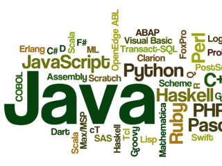

Applications
Over the years there has also been many websites / web systems that I created but as time have moved on these now look very dated and at the moment are not shown on this page. They will be added later at some point as a history reference.
I am currently working on downloads for everything possible, these will be available later.
| GZ Doom Launcher |
Coded using: VB.net |
 |
A simple program that allows you to select multiple WAD and PK3 files to run with GZdoom. You can then save the selected files as presets so that you can run the same setup at a later date. |
| Computer Lookup |
Coded using: VB.net |
 |
This is a tool that helps remote into other PCs on a network. It was mainly first built to help aid reverse lookup in log files and since it has been expanding to integrate the PS tools. |
| Visulizer |
Coded using: Love2D (Lua) |
 |
An audio Visulizer that tries to show in realtime. This has video background playback or you can have an image that zooms and moves in the background. The bars shown can be adjusted and titles are shown. It also shacks the screen with the bass, Particals moving and pulsing logo. Its a work in progress and I would later like to make a simple interface for anyone to tweak the settings and to make it free as so many charge money for this sort of thing. |
| Dev Basic Backup |
Coded using: VB.net |
 |
When working for a software company, I created a simple tool to backup source code that I was working on. |
| Dev Basic Source Control |
Coded using: VB.net |
|
When working for a software company, I created a simple tool to check and control source code that I was working on, this saved me time as otherwise it would of been done manually. |
| Character Draw |
Coded using: Java EE |
 |
Working on ZX Spectrum games, I needed a 8x8 character editor that gave me the BASIC data / data bin commands to help develop and speed up sprite development. |
| Click Notes |
Coded using: Java EE |
 |
A little program that was created for video recording when you don't want to talk. Simply add the text in the program, then right click the yellow text and left click for next message. The idea to to replace videos / youtube videos that use notepad with something a little better. |
| Combo Boxes |
Coded using: VB.net |
|
Program for producing listed names on pre-cut A4 Paper for group photos.
Owned by Business |
| Thunderbird Email Address Extractor |
Coded using: VB.net |
|
This was a tool that can read Thunderbird email files and then extract the email addresses from it. The idea was that you could then back up the contacts and use the email addresses in other applications. This version had a extra feature to remove certain domain addresses too.
Owned by Business |
| IP Changer |
Coded using: VB 6.0 |
 |
This program was designed for people on the move where you have to connect to different networks all the time. This program automates changing your IP address, subnet mask, DNS details and Internet explorer proxy settings all at a click of a mouse. You could have up to 20 locations. |
| IP Scan |
Coded using: Windows Batch Scripting |
 |
This little script scans an IP range and creates a text file that lists all the devices that it could ping. It will show the hostname, ip address and Mac-address. The idea of this was to quickly scan a network without having to install software to get basic results. |
| Image Finder |
Coded using: C#.net |
|
Image Finder searches the database and finds the image that was read in by the barcode scanner. If any settings in the database are found, the image is adjusted. This program also provides many graphic effects.
Owned by Business |
| Image Menu System |
Coded using: Java EE |
 |
A program that sets up a PC after deployment from FOG (imaging) by running a java program and custom Batch scripts (copying files and changing services)
Owned by Business |
| Montage Designer |
Coded using: VB.net |
 |
Create a montage image without photoshop or any design skills. Select a folder with images and then Just move them around and resize them with the mouse. Once done, hit the Save button and you now have a montage image all put together for you. |
| Motion Basic Web Interface |
Coded using: HTML & PHP |
|
Currently available on SourceForge, It was released as OpenSource back in 2012. A basic web interface frontend for linux motion daemon. No database required, it reads the save directorys that are created in the threads of motion. All programmed in PHP and aimed to be simple so that it can be modified when needed. - Can use IP restrictions to the page - Basic reading directorys and jpg files to display them on one page - Can restrict what camera folders to display and not display - Designed to have basic coding and nothing fancy so it can be modified. |
| Photo Capture Importer |
Coded using: VB.net |
|
This program was created so that the data could be used from the Photo Capture program and imported into a 3rd Party database. This took a while to create with lots of testing as it was injecting data into a SQL database that was designed by a 3rd party and with no documentation.
Owned by Business |
| PC Info |
Coded using: Java EE |
|
A small Java program that runs in the task bar. Once clicked it gives basic information about the computer. This was designed for office use as many people did not know what the PC name was and other information could easily be asked for over the phone. designed for Windows 7. |
| Photo Capture |
Coded using: VB.net |
|
Image and data management used for photographers, it grabs images from the camera save folder, attaches any data and merges it all together, creating a thumbnail or full image CD. This program has many features and a full manual has been written for it. At the time it was used by over 40 Photographers.
Owned by Business |
| Photo Link |
Coded using: Java EE |
 |
Photolink is a cross platform program for batching photographs that are linked to a names list (stored as a CSV). This is designed so that the batched images can be imported into school information systems such as CMISS, Simms and ID databases so that the photos are linked with the names. At one time this was released on SourceForge but as no-one helped with the project it came off the site and 2 revisions later its now stable and has been used and tested in real live photo sessions. |
| Port Scanner |
Coded using: Java EE |
|
A simple little Java program to scan open and closed ports on an IP address. I was after a simple basic tool that would not trigger the antivirus and in the end created my own little program. |
| Print Logger |
Coded using: VB.net |
 |
A small program created that reads the event logs on a Windows 2003 Server and creates a list of what the users have been printing. This was designed to be a small free program to quickly check what users were printing a lot.
Owned by Business |
| Quick Convert and Zero-R Tools |
Coded using: VB.net |
|
Quick Convert is a small utility batch program that gets all JPG files from a folder and creates Smaller thumbnail images at a click of a button. Zero-R is a small utility that checks a filename length and either trims or pads the name out.
Owned by Business |
| Skeep VNC & Administration Tool |
Coded using: HTML and XML |
 |
Modified and updated from the 1.4 Skeep software that is available on SourceForge (abandoned back in 2012). This release has a merged ping option, fixed some bugs relating to canceling an option when selected. Added RDP and Remote Tools that include Info, Processes command,logged in and remote reboot. Also the Theme colour has been changed and increased right click menu for easier clicking. Was still in use in the begining of 2017. |
| Space Checker |
Coded using: VBS Scripting |
|
A small VBS script for windows that you can either run or set as a scheduled task (Aimed to be on a server). All it does is check the free hard drive space and if its below a set level then it can either display a warning and/or email the set user. |
| VNC Multiple Viewer |
Coded using: Java EE |
 |
Based on an open source project based in Java, this connects to Multiple computers using VNC and allows You to view the connected PCs. The program was customised to the site and was designed as a free alternate to a paid product.
Owned by Business |
| And there was More |
Coded using: Classic ASP, DOS Scripts, PHP, QBasic, Pascal, C, C++ |
|  |
There was also many other programs created in other languages but sadly over time these have been lost. Websites and Web Applications created in Classic ASP including a replacement IT Support Ticket system were included. PHP sites and software including a basic CMS system long before the likes of wordpress came along. Also Dos Scripts and QBasic programs before that too. That is the reason that this website was created, to try and prevent the loss of programs created. |